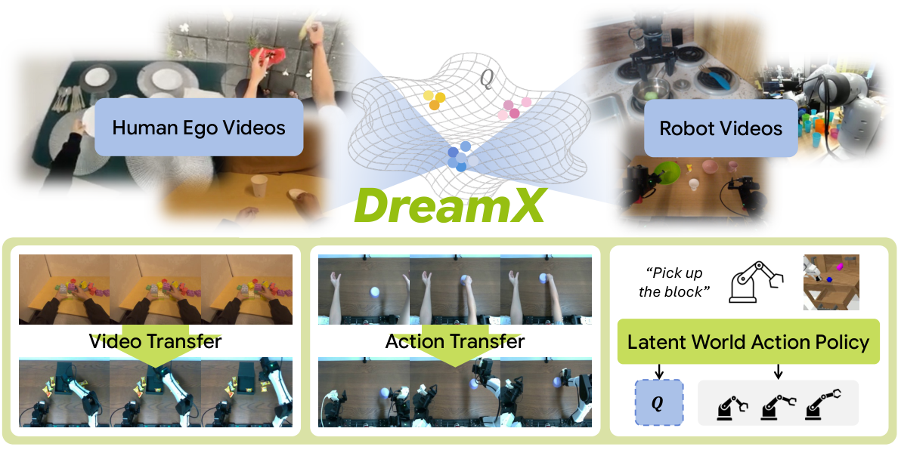

Understanding how actions transform the physical world.
About
I am an undergraduate in Electrical Engineering at KAIST.
I conduct research with Prof. Seungryong Kim at KAIST CVLab
and Prof. Ziwei Liu at NTU S-Lab (MMLab).
I am also a research intern at MAUM AI.
My work connects human video and robot experience to understand physical interactions
and how actions change the world.
Research
How can AI understand the physical consequences of actions in real-world environments?
I study egocentric and embodied AI, with three connected interests:
Tool-use reasoning: understanding tool choice, interactions, and evolving object states from first-person video.
Latent actions & world models: learning action representations from human and robot experience to model what happens next.
3D/4D scene understanding: building geometry-aware representations for reconstruction and embodied interaction.
Recent news
Oct 2026
Presented
EgoTools
at EMNLP 2026 in Budapest, Hungary.
PhotosHide photos
EgoTools brings together ~100 hours of egocentric tool-use video and a 1,000-question benchmark to study how models reason about tools, procedures, and physical effects.
C3G learns compact scene representations with just 2K Gaussians, supporting feed-forward 3D reconstruction, novel-view synthesis, and scene understanding.

DreamX: Video Diffusion Model Is A Universal Latent Action Learner.
DreamX uses a pretrained video diffusion model to learn latent actions shared across human and robot videos, enabling video transfer and human-to-robot action transfer.
* Equal contribution.
Research experience
MAUM AI, WoRV Division, Future Intelligence Lab
Aug 2026 – Present
Research Intern
Lead task design for a long-horizon human–robot collaboration
benchmark, developing simulated cooking scenarios, physical
success checks, and partial-information variants; built an early
state-engine prototype and found that symbolic task constraints
masked visual activity-recognition errors.
Co-led EgoTools, a dataset and benchmark for tool-centric
reasoning: collected ~100 hours of egocentric tool-use video and
designed a 1K-QA benchmark across four reasoning tracks, with
annotation and quality-control workflows.
Ran input ablations validating the benchmark’s reliance on
visual and temporal evidence; contributed to the Qwen3-VL-8B
fine-tuning study (EgoTools-Bench 50.0% → 60.9%) and its
cross-benchmark generalization analysis.
Jun 2026 – Oct 2026: For DreamX, ran the latent-action baseline
comparison on LARYBench under a shared protocol, and co-ran
human-to-robot action-transfer experiments on a bimanual robot,
recording human demonstrations and paired teleoperated
reference trajectories.
Jun 2025 – Nov 2025: Contributed to C3G, analyzing DINOv2-based
attention maps to study how compact Gaussian queries aggregate
multi-view information.
Video and Image Computing Lab (VICLab), KAIST
Dec 2024 – Jun 2025
Research Intern · Advisor: Prof. Mun Churl Kim
Implemented and evaluated object-detection pipelines spanning
two-stage, YOLO-style, and Vision Transformer architectures for
few-shot and anomaly detection tasks.
Education
Korea Advanced Institute of Science and Technology (KAIST)
Daejeon, South Korea
B.S. in Electrical Engineering
Mar 2021 – Expected Aug 2027
GPA: 4.09/4.30 · Major GPA: 4.19/4.30
Nanyang Technological University (NTU)
Singapore
Exchange Student, School of Electrical and Electronic
Engineering